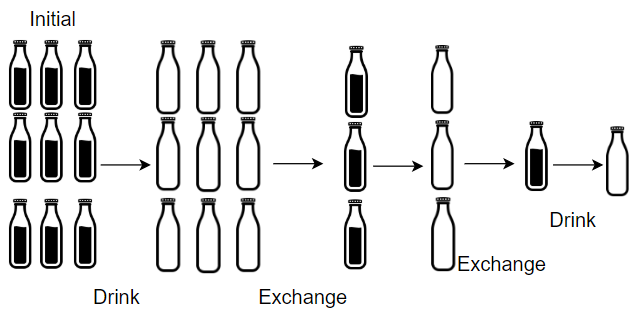
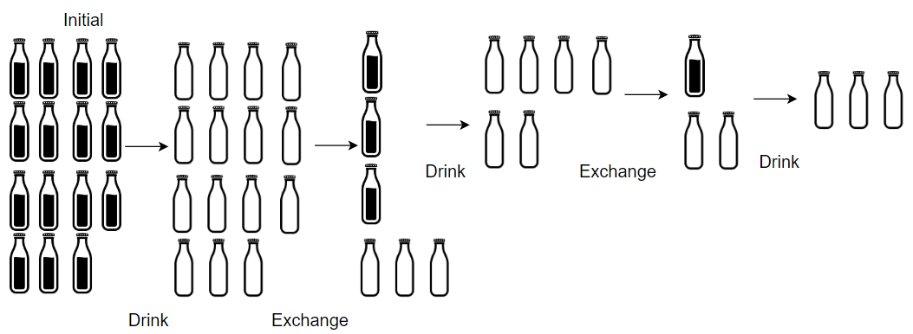

1518. 换水问题
模拟：先全喝掉，空瓶够 numExchange 就整换一批，换来的喝完又变回空瓶，直到空瓶不够换。
思路
total记喝掉的总数，empty记手上的空瓶数；开局两者都等于numBottles。- 每轮
fresh = empty / numExchange瓶新水（只够整换），total += fresh。 - 喝完这
fresh瓶又变回fresh个空瓶，加上换剩的零头：empty = empty % numExchange + fresh。 - 循环到空瓶不够换为止；换完一次
numExchange不变（变的是 3106 那道题）。
图解
最优解
1class Solution {2 public int numWaterBottles(int numBottles, int numExchange) {3 // total 是喝掉的总数，empty 是手上的空瓶数；一开始全喝掉4 int total = numBottles, empty = numBottles;5 while (empty >= numExchange) {6 // 空瓶只够整换：换 fresh 瓶新的，喝完又变回 fresh 个空瓶7 int fresh = empty / numExchange;8 total += fresh;9 empty %= numExchange;10 empty += fresh;11 }12 return total;13 }14}题目
超市正在促销，你可以用 numExchange 个空水瓶从超市兑换一瓶水。最开始，你一共购入了 numBottles 瓶水。
如果喝掉了水瓶中的水，那么水瓶就会变成空的。
给你两个整数 numBottles 和 numExchange ，返回你 最多 可以喝到多少瓶水。
示例 1：

输入：numBottles = 9, numExchange = 3
输出：13
解释：你可以用 3 个空瓶兑换 1 瓶水。
所以最多能喝到 9 + 3 + 1 = 13 瓶水。
示例 2：

输入：numBottles = 15, numExchange = 4
输出：19
解释：你可以用 4 个空瓶兑换 1 瓶水。
所以最多能喝到 15 + 3 + 1 = 19 瓶水。
提示：
1 <= numBottles <= 1002 <= numExchange <= 100
题面取自力扣当前版本。
数据快照 2026-11-04。题面版权归力扣所有，本站点仅供本人学习使用，请勿对外发布。